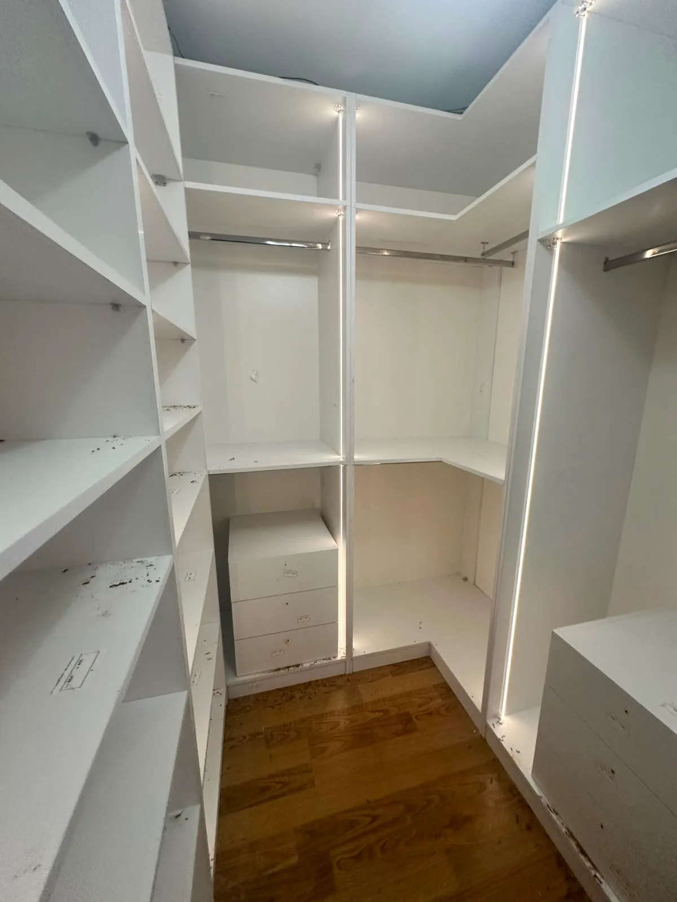
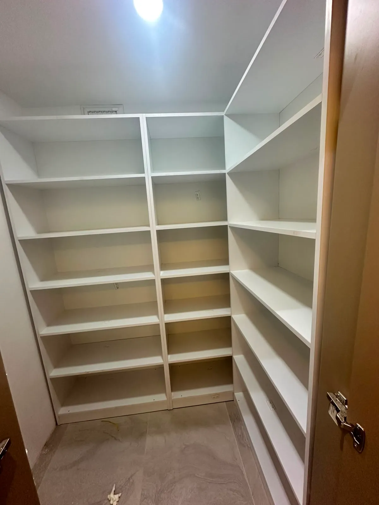

Özel Tasarım Giyinme Odası (Walk-in) Modelleri.
Her kıyafet, ayakkabı ve aksesuar için akıllıca bölümlendirilmiş, dikey lineer LED aydınlatmalı ve İtalyan mekanizmalı lüks giyinme odaları. Füme reflekte cam veya ipek mat lake kapak seçenekleriyle.

Füme Cam Kapaklı & Merkez Ada Üniteli Giyinme Odası
2026 KoleksiyonuButik Konsept & Kusursuz Düzen
Geniş villalardan kompakt dairelere kadar her alana özel giyinme odası mühendisliği.
Merkez Ada Çekmece Ünitesi
Odanın ortasında yer alan cam tablalı takı, kol saati, güneş gözlüğü ve kemer sergileme ünitesi.
- Cam tabla altı LED aydınlatma
- Özel bölmeli kadife mücevherlik

Açık Modüler Raf ve Askılıklar
Kıyafetlerinizi tek bakışta görmenizi sağlayan kapaksız lüks tasarım. Dikey alüminyum direk ve ahşap raf kombinasyonu.
- Ayarlanabilir raf ve askı yükseklikleri
- Dikey profil gizli lineer LED ışıklar

Bronz & Füme Camlı Dolaplar
Tozlanmayı önlerken transparan şıklık sağlayan, gizli menteşeli özel İtalyan profil cam kapaklar.
- Manyetik sessiz kapı stoperi
- Temperli darbelere dayanıklı cam
Giyinme Odası Üretim & Montaj Videomuz
Ümraniye atölyemizde CNC ebatlama, alüminyum cam çerçeve montajı ve yerinde kurulum anları.
Özel Ölçü Walk-in Closet ve Ada Ünitesi
Videoda atölyemizde üretilen füme temperli reflekte cam kapaklar, dikey lineer LED aydınlatmalı alüminyum profiller ve merkez ada takı ünitesinin gerçek montaj detaylarını izleyebilirsiniz.
- ✓ 18 mm E1 neme dayanıklı MDF-Lam gövde
- ✓ İtalyan gizli menteşeli füme cam kapak sistemi
- ✓ Kadife bölmeli takı, saat ve gözlük çekmeceleri
- ✓ Ümraniye fabrikamızdan doğrudan aracısız teslimat
📸 Atölyemizden Gerçek Giyinme Odası Uygulamaları
Merkez Ada Takı Ünitesi & Cam Tablalı Tasarım
Özel ölçü kadife bölmeli çekmeceler ve entegre LED aydınlatma.
Modüler Açık Raf & Asansörlü Askılık
Tavana sıfır dikey alüminyum profil ve gizli lineer ışık kurgusu.
Reflekte Füme Cam & Alüminyum Çerçeve
Toz almayan manyetik fitilli sessiz kapak sistemi.

Fonksiyonel Çekmece & Pantolonluk Sistemi
Blum frenli tandem raylar ve teleskopik aksesuar düzenleyiciler.
Özel İmalat Giyinme Odası Sistemleri, Ada Modülleri ve 2026 Fiyatları
Giyinme odaları, yatak odalarındaki dolap karmaşasını tamamen ortadan kaldıran, kıyafet, ayakkabı, çanta ve mücevher koleksiyonlarınızı lüks bir moda mağazası butik konseptinde organize eden kişiselleştirilmiş mekanlardır. Mutfak Dolabınız olarak Ümraniye Yukarı Dudullu atölyemizde CNC hassasiyetinde ürettiğimiz giyinme odalarında; füme/bronz alüminyum çerçeveli reflekte cam kapaklar, dikey gömme lineer LED aydınlatmalar, cam tablalı ada takı çekmeceleri ve pantolonluk/kravatlık mekanizmalarıyla milimetrik uyum sağlıyoruz.
📊 2026 Teknik & Fiyat Karşılaştırma Matrisi
| Teknik Parametre | Mutfak Dolabınız İmalat Standardı | Kullanıcı Avantajı & Garanti |
|---|---|---|
| Gövde & Modül Malzemesi | 18 mm E1 Çift Yüz Melamin Kaplı Neme Dayanıklı MDF-Lam | Egger / Kastamonu levha, sarkma yapmayan 25 mm güçlendirilmiş raf opsiyonu |
| Kapak & Profil Sistemi | İtalyan İnce Alüminyum Profil + 4 mm Temperli Füme/Bronz Reflekte Cam | Parmak izi tutmaz, çarpmaya dayanıklı güvenlik camı, manyetik sessiz stoper |
| Aydınlatma Altyapısı | Profiller İçine Gömme Gizli Lineer LED & Akıllı Kapak Açılış Sensörleri | Göz almayan 3000K-4000K doğal gün ışığı, gizli trafo ve kanallı kablolama |
| İç Donanım & Aksesuarlar | Bas-Aç Blum Tandem Çekmeceler, Asansörlü Askılık (Servetto), Kadife Takılık | 100.000 açma testli mekanizmalar, çizilmeyen kadife takı ve saat bölmeleri |
| 2026 Metretül & Modül Fiyatı | ₺12.500 - ₺16.500 / Metretül (Ada Ünitesi & Cam Kapaklar Dahil) | Doğrudan Ümraniye Dudullu imalatçı fiyatı, aracı ve mağaza komisyonsuz |
| Üretim & Montaj Süreci | 12-14 İş Gününde Üretim · 1 Günde Temiz Anahtar Teslim Montaj | İstanbul genelinde ücretsiz lazerli 3D oda keşfi ve 5 yıl tam atölye garantisi |
💎 Merkez Ada Çekmece Ünitesi ve Cam Tablalı Mücevherlik
Giyinme odasının kalbi sayılan ada ünitesi, üst yüzeyindeki ekstra şeffaf temperli cam tablası ve içindeki gizli LED aydınlatması ile saat, kol düğmesi, takı, güneş gözlüğü ve kemerlerinizi sergiler. Özel ölçüye göre kadife kaplamalı takı bölmeleri ve çift taraflı bas-aç çekmeceler ile lüks rezidans konforu evinize taşınır.
✨ Füme ve Bronz Reflekte Cam Kapaklar ile Tozsuz Koruma
Açık giyinme sistemlerinde en büyük dezavantaj kıyafetlerin zamanla tozlanmasıdır. Mutfak Dolabınız reflekte cam kapak sistemleri, kapaklar kapalıyken şık bir ayna efekti yaratırken dolap içi sensörlü LED ışıkları yandığında içeriyi kristal netliğinde gösterir. Toz fitilleri ve manyetik sessiz kapanma mekanizmalarıyla kıyafetleriniz daima tertemiz kalır.
👔 Asansörlü Askılıklar ve Özel Pantolonluk & Kravatlık Rayları
Tavan yüksekliği 2.60m ve üzeri olan odalarda en üst hacimleri verimli kullanmak için hidrolik asansörlü askılık (servetto) sistemleri kullanıyoruz. Hafif bir çekme hareketiyle askılık seviyenize iner. Alt bölümlerde ise teleskopik raylı pantolonluklar, kravat ve fular çekmeceleri, ayakkabı rafları ile her parçanın yeri baştan belirlenir.
🏭 Ümraniye Doğrudan Fabrika İmalatı ve Ücretsiz 3D Keşif
Modüler hazır dolapların aksine odanızdaki kolon, kiriş, girinti veya eğimli çatı tavanlarına birebir özel üretim yapıyoruz. Lazer ölçüm sonrası mimarımız 3D fotogerçekçi çizim hazırlar, onayınızın ardından Dudullu atölyemizde üretilip kendi marangozlarımız tarafından sıfır hatayla kurulur.
Giyinme Odası Sıkça Sorulan Sorular
Giyinme Odanız İçin Anında Atölye Fiyatı Alın
Odanızın en, boy ve tavan yüksekliğini WhatsApp hattımıza iletin; iç mimarımız 15 dakika içinde ihtiyaçlarınıza özel yerleşim planını ve doğrudan atölye imalat teklifinizi çıkarsın.